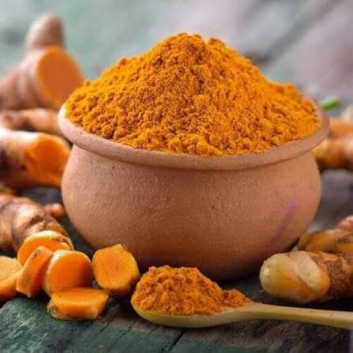
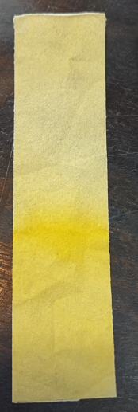
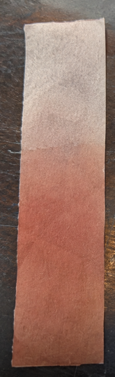
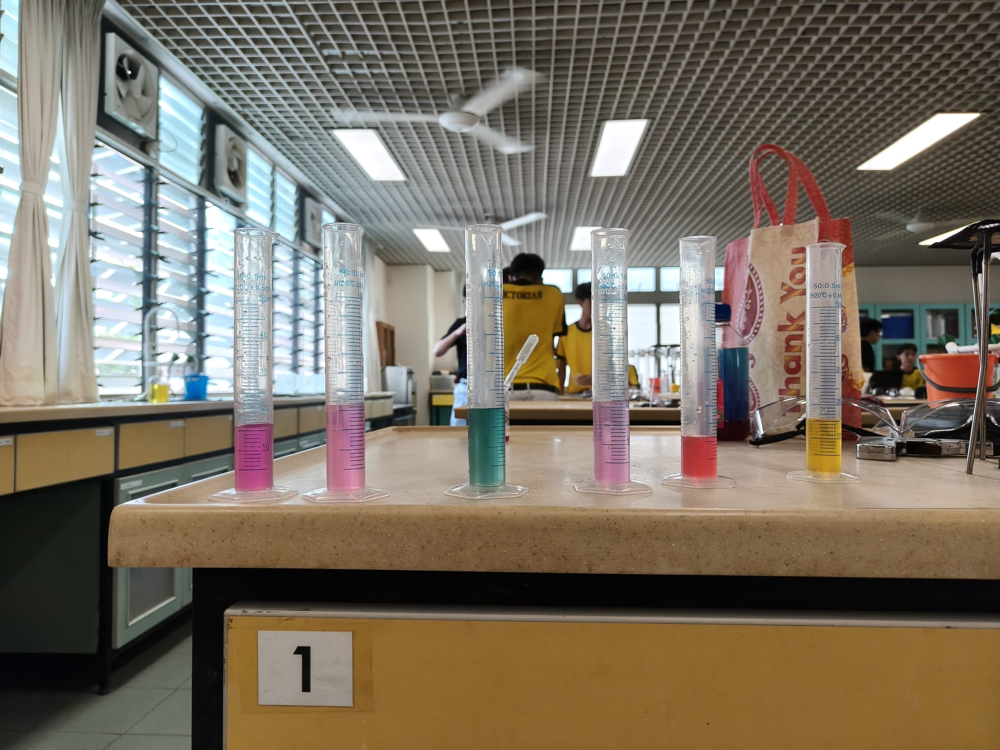
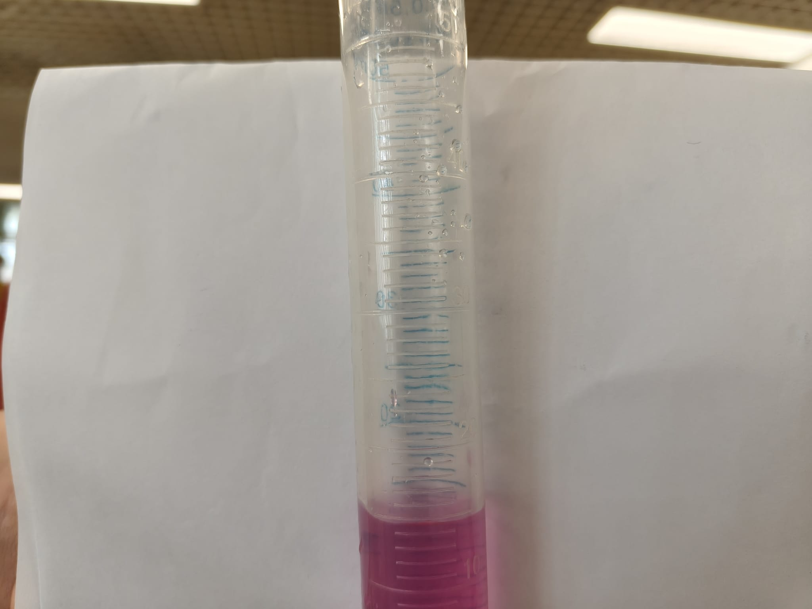
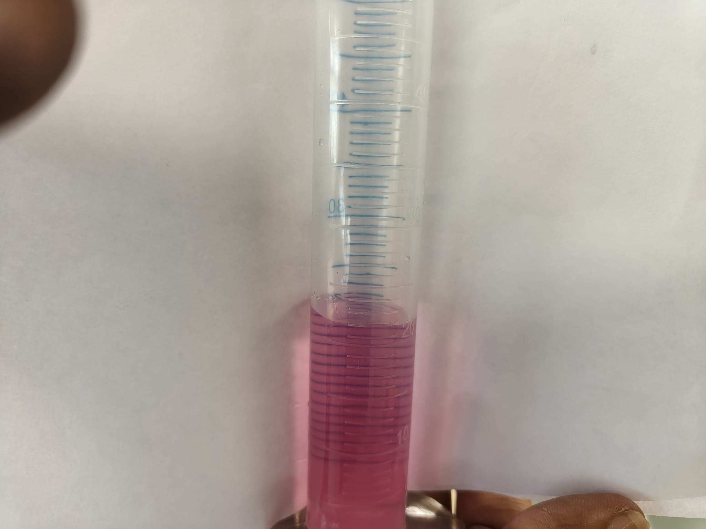
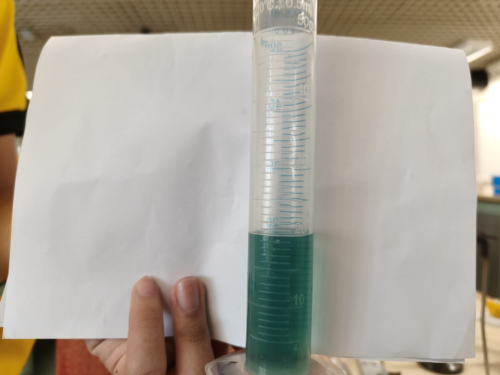
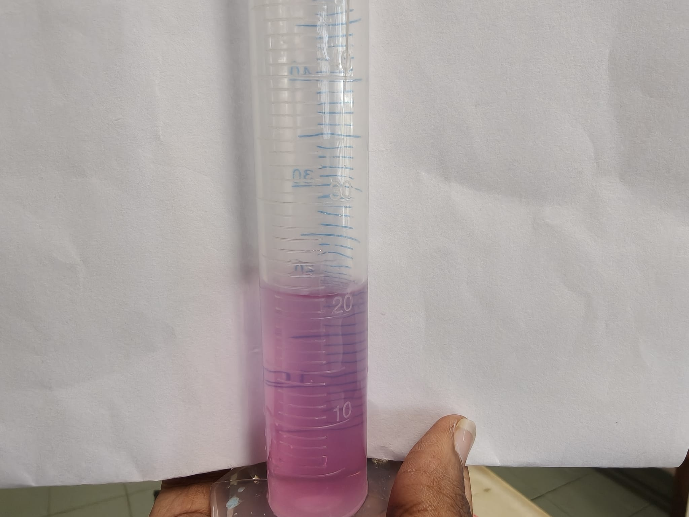
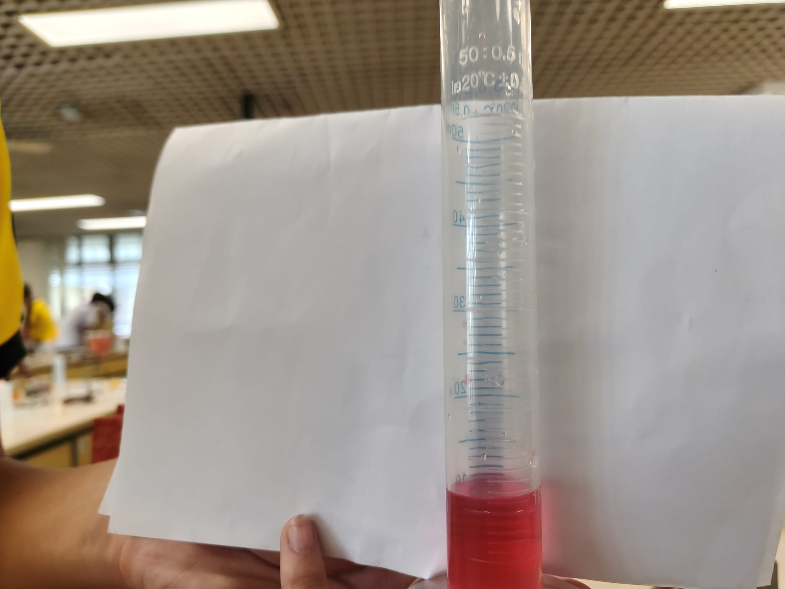
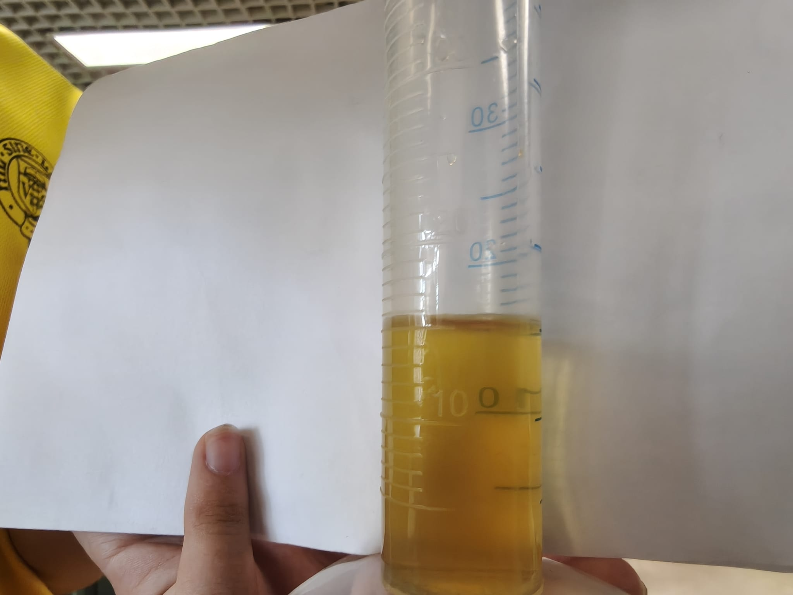

01
Background Research
Why we picked these two indicators, and what the research says about them.
INTRODUCTION
We had a few things to think about when picking our indicators. Colour range, solubility, shelf life, and how well they'd work together. Red cabbage stood out because it's packed with anthocyanin, the pigment that gives it that deep purple colour and reacts across most of the pH scale. Then we needed a second one to go with it.
The problem was that anthocyanin goes nearly clear in basic solutions, so the colour change at that end of the scale is hard to see. Turmeric fixed that. Its active pigment, curcumin, turns dark red in bases, which makes the change at the alkaline end much more obvious.
On their own, both worked. But together they worked better. It took some trial and error though. The main issue was how little turmeric we could use. Too much and the whole mixture stays red, because curcumin turns red in acid while anthocyanin turns red in base. They'd cancel each other out and kill the contrast. So curcumin ended up playing a supporting role, just making the alkaline end clearer rather than doing half the work. The other problem was that turmeric doesn't dissolve in water, so we had to look at using alcohol instead. We worked through it and ended up with an indicator we're happy with.

.jpg)
LITERATURE REVIEW · AGARAN MURUGAN
Red cabbage (Brassica oleracea) works well as a natural pH indicator because its anthocyanins are water-soluble and shift colour across a wide pH range. Anthocyanins are a type of flavonoid pigment, and their colour comes from the way the molecular structure changes with the concentration of hydrogen ions around it. In acidic conditions the flavylium cation form dominates, which looks red. As pH rises the molecule loses protons and shifts through quinonoidal and chalcone forms, moving through pink, purple, blue, and green before it breaks down at the strong-alkali end. The same pigments are antioxidants and antimicrobial, which is why they're showing up in smart food packaging that warns you when food is going off. Among natural pigments, red cabbage anthocyanins have one of the widest colour ranges, and researchers have already embedded them into bio-polymer films that act as real-time spoilage sensors. The literature also notes that the colour isn't perfectly stable. Heat, light, and oxygen all speed up the breakdown of anthocyanins, so the extract fades over time. We noticed this ourselves, since our indicator lost its colour after a couple of days in the fridge.
LITERATURE REVIEW · AYDIN FARHAN
Curcumin is the main pigment in turmeric (Curcuma longa) and works as a natural acid-base indicator because its structure changes with pH. Curcumin is a diarylheptanoid, and its colour comes from a chain of conjugated double bonds that absorb light in the blue region, which is why it looks yellow. In acid and neutral solutions it stays in its protonated form and the colour doesn't change. In alkaline conditions it deprotonates, which shifts the conjugated system and changes the absorption, so the colour moves to red-brown. N-hexane turmeric extracts have been shown to work about as well as synthetic indicators in strong acid-strong base titrations, with sharp, repeatable end points. The catch is that curcumin barely dissolves in water because of its hydrophobic structure, so it's best extracted in a mild organic solvent or warm water. The main weakness is its narrow range. It barely reacts across the acidic and neutral regions and only really responds to bases. That's why we paired it with red cabbage, since the two pigments cover different parts of the scale.
02
Individual Investigations
Each member planned and ran their own experiment on their assigned plant. Here's the planning, results, and analysis, plus a strip simulation for each indicator.
EXPERIMENTAL PLANNING SUMMARY
- INDEPENDENT VARIABLE
- pH of the test solutions (lemon juice, salt water, bleach).
- DEPENDENT VARIABLE
- Colour of the red cabbage indicator.
- CONTROLLED VARIABLES
- Volume of indicator (3 ml), volume of each test solution (5 ml), and testing location.
- PROCEDURE
- Boiled and simmered red cabbage to pull out the pigment, then added a fixed amount of indicator to each test solution and compared the colour against a reference chart.
- USE OF DATA
- Matched the colour to the chart and took an RGB reading with an app to find the pH of each solution, then checked it against universal indicator results.
- SAFETY
- Wore goggles while boiling, gloves when handling the cabbage to avoid contamination, and didn't touch the hot mixture until it cooled.
MATERIALS & METHODS
We chopped 500 g of red cabbage and put it in a pot with enough water to cover it. Boiled for 10 minutes, then simmered for 30. Filtered it and kept the liquid in the fridge as our indicator. For each test we added 3 ml of indicator to 5 ml of the test solution (lemon juice, salt water, bleach) and compared the colour to our chart. We ran it again with 2 ml of universal indicator as a cross-check.
INTERACTIVE STRIP SIMULATION · RED CABBAGE
✋ Soak the strip in red cabbage extract, then drag it into a reagent to see how it reacts.
Red cabbage
extract
Indicator source
Lemon juice
Acidic
Distilled water
Neutral
Bleach
Alkaline
PH COLOUR REFERENCE · RED CABBAGE (AGARAN)
OBSERVATIONS & DATA
| SOLUTION | COLOUR OBSERVED | APP READING | PH |
|---|---|---|---|
| Lemon juice (acidic) | Red / pink | RGB 231, 76, 109 | pH ≈ 3 |
| Salt water (neutral) | Purple / violet | RGB 125, 95, 194 | pH ≈ 7 |
| Bleach (alkaline) | Blue-green | RGB 59, 156, 165 | pH ≈ 12 |
PHOTOS FROM THE INVESTIGATION

Red-pink · pH ≈ 3

Purple · pH ≈ 7

Blue-green · pH ≈ 12
Colour cards show roughly what we observed. Swap in lab photos where you have them.
💡 ANALYSIS OF INDICATOR
Red cabbage gave clear, vivid colour changes across all three solutions. Lemon juice turned it bright red-pink. Salt water kept its natural purple-violet. Bleach shifted it to blue-green. The changes were sharp and easy to tell apart by eye, and the RGB readings confirmed each colour sat in its own part of colour space with big jumps between pH levels. The reason the colour shifts so much is that anthocyanins exist in several structural forms depending on the pH. In acid the flavylium cation is the main form and looks red. As the solution becomes less acidic, the molecule shifts to quinonoidal and then chalcone forms, each of which absorbs light differently, so the colour moves through pink, purple, and blue. Its main strength is range. Anthocyanins react across almost the whole pH scale, which is why red cabbage is the backbone of our blend. The weak spot is the strong-alkali end, where the chalcone form breaks down and the colour gets pale and washed out. That's where turmeric comes in, since curcumin deprotonates and turns red-brown in the same region.
EVALUATION & SCIENTIFIC REASONING
Strengths: it covers a wide pH range with clear, well-separated colours. The structural forms of anthocyanins change smoothly across the scale, so there's a distinct colour for each pH band. Being water-soluble means extraction is just boiling, since the pigments move easily into the water. It's cheap, non-toxic, and easy to find. Limitations: anthocyanins break down with light and heat because oxygen and UV damage the flavylium ring, so the liquid fades after a few days. The colour goes pale at the strong-alkali end where the chalcone form degrades. Pigment strength varies from one cabbage to the next depending on soil, season, and how old the cabbage is. Improvements: standardise the concentration with a colorimeter so each batch is the same strength, store the liquid in a dark airtight container to slow down oxidation, add a little ethanol to stabilise the pigment, and calibrate against buffers of known pH for a solid reference chart.
EXPERIMENTAL PLANNING SUMMARY
- INDEPENDENT VARIABLE
- The household solution the paper strip was dipped in (lemon juice, salt water, or bleach).
- DEPENDENT VARIABLE
- The final colour the turmeric strip turned.
- CONTROLLED VARIABLES
- How long the strip dried, how long it sat in each solution, and how long we waited before reading the colour.
- PROCEDURE
- Mixed turmeric powder into warm water (2 teaspoons per 100 ml) to release the pigment, dipped paper strips in, and tested them against the three solutions.
- USE OF DATA
- Matched each strip's colour to the reference chart and took an RGB reading with an app to find the pH, then checked it against universal indicator results.
- SAFETY
- Wore gloves the whole time since turmeric stains almost anything porous. Kept the bleach in a well-ventilated area away from acidic solutions to avoid releasing chlorine gas.
MATERIALS & METHODS
To get the turmeric extract, I mixed turmeric powder into warm water, about 2 teaspoons per 100 ml. I tried cold water first but it barely pulled any colour out, so I considered ethanol since it dissolves curcumin better. In the end I stuck with warm water. It worked well enough and was far easier and safer to prepare than handling ethanol. How much turmeric I used depended on how strong I needed the colour. I tested the extract on lemon juice (acidic), salt water (neutral), and bleach (alkaline). I assumed the household solutions were at their typical pH (lemon juice ≈ 2, salt water ≈ 7, bleach ≈ 11) since I didn't have a pH meter to check precisely.
INTERACTIVE STRIP SIMULATION · TURMERIC
✋ Soak the strip in turmeric extract, then drag it into a reagent to see how it reacts.
Turmeric
extract
Indicator source
Lemon juice
Acidic
Distilled water
Neutral
Bleach
Alkaline
PH COLOUR REFERENCE · TURMERIC (AYDIN)
OBSERVATIONS & DATA
| SOLUTION | COLOUR OBSERVED | APP READING | PH |
|---|---|---|---|
| Lemon juice (acidic) | Bright yellow | RGB 240, 205, 68 | pH ≈ 3 |
| Salt water (neutral) | Yellow | RGB 233, 190, 72 | pH ≈ 7 |
| Bleach (alkaline) | Red-brown | RGB 150, 60, 40 | pH ≈ 12 |
PHOTOS FROM THE INVESTIGATION

Yellow · pH ≈ 3

Yellow · pH ≈ 7

Red-brown · pH ≈ 12
Colour cards show roughly what we observed. Swap in lab photos where you have them.
💡 ANALYSIS OF INDICATOR
Turmeric barely changed at all in lemon juice or salt water, staying a steady yellow in both. It only reacted once the solution turned strongly alkaline, where it shifted to a deep red-brown. That's because curcumin's structure only changes once it loses a proton, which needs a high concentration of hydroxide ions. In acid and neutral solution the molecule keeps its keto form and stays yellow. Its main strength is a sharp, high-contrast signal exactly where red cabbage goes weak, at the strong-alkali end. The trade-off is range: on its own turmeric can't tell acid from neutral, so it's not useful as a stand-alone indicator across the whole scale, only as a supporting one.
EVALUATION & SCIENTIFIC REASONING
Strengths: turmeric gives an intense, high-contrast response to bases. It stays stable and unchanged in acid and neutral. It's non-toxic and widely available. Limitations: curcumin won't dissolve in water, so you need warm water or an organic solvent. It stains porous materials easily. The range is narrow, since it can't tell acid from neutral. And if you use too much, it masks the red cabbage's colour. Improvements: extract with a controlled ethanol-water ratio for consistent strength, pre-coat and dry filter-paper strips so they're portable, and read the end-point colour with a colorimeter to take the guesswork out of it.
03
Group Optimisation
How we mixed the two extracts into one broad-range indicator, and how we landed on the right ratio.
⧉ FINAL INDICATOR FORMULATION
We mixed the two extracts at an 80:20 ratio, 160 ml red cabbage to 40 ml turmeric. We used more red cabbage because our turmeric extract wasn't vibrant enough to show clearly on its own. The extra cabbage kept the colour changes strong and easy to read across all three solutions.
We measured both with a graduated cylinder, combined them in a clean beaker, and stirred for about a minute until the colour was even. We tried small batches at 60:40, 70:30, and 80:20 before settling on the final ratio.
💧 BLENDING RATIO
| EXTRACT | RATIO | VOLUME |
|---|---|---|
| Turmeric extract | 20% | 40 ml |
| Red cabbage extract | 80% | 160 ml |
| Total mixture | 100% | 200 ml |
04
Live Lab Practicum
We tested our combined indicator against six unknown solutions in the lab, then sorted each one by colour.
▮ RESULTS OVERVIEW — SAMPLES A-F

Lab bench · six unknown solutions tested with the 20:80 turmeric-cabbage blend (A-F, left to right)

ARed / crimson
Weak acid

BPink / magenta
Weak acid

CLight purple / lavender
Weak alkali

DPurple / violet
Neutral

ETeal / blue-green
Strong acid

FYellow / gold
Strong alkali
▤ HOW TO READ THE COLOUR SCALE
Red cabbage indicator (anthocyanins) generally runs red or pink in strong acid, rose or pink in weak acid, purple or violet at neutral, blue-green or teal in weak alkali, and yellow-green in strong alkali. Turmeric (curcumin) mostly stays yellow through acid and neutral, then shifts toward reddish-brown in strong alkali. Our blend is mostly red cabbage (80%), so the cabbage pattern dominates. The turmeric mainly shows up as a brown shift at the strong-alkali end.
Match this against what we actually saw in the photos above to check each classification.
MIXED INDICATOR · FULL PH COLOUR SCALE
INTERACTIVE MIXED-INDICATOR SIMULATION · MIXTURE
✋ Soak the strip in the mixed indicator, then drag it into a reagent or unknown to test the blend.
Mixed
indicator
Indicator source
Lemon juice
Acidic
Salt water
Neutral
Bleach
Alkaline
▮ CLASSIFICATION OF UNKNOWN SOLUTIONS
| SAMPLE | COLOUR OBSERVED | CLASSIFICATION |
|---|---|---|
| A | Red / crimson | Weak acid |
| B | Pink / magenta | Weak acid |
| C | Light purple / lavender | Weak alkali |
| D | Purple / violet | Neutral |
| E | Teal / blue-green | Strong acid |
| F | Yellow / gold | Strong alkali |
05
Discussion & Conclusion
What we found as a group, and each member's take on their own indicator.
⚗ GROUP ANALYSIS & FINDINGS
Mixing red cabbage (80%) with turmeric (20%) gave us a broad-range indicator. It kept the wide colour range of anthocyanins, and the curcumin sharpened things up at the alkaline end where red cabbage alone gets washed out. In lemon juice the blend turned orange-red, in distilled water a purple, and in bleach a brownish-green. Three clear colours that span the whole pH scale in one mixture.
In the Live Lab Practicum the blend got five of six unknowns right. One was ambiguous, right at the weak-acid/neutral boundary where the colours are closest. We landed on the 80:20 ratio through testing. Too much turmeric and the mixture went reddish, since curcumin turns red in acid while anthocyanin turns red in base, and they cancel each other out. Our turmeric extract wasn't very vibrant on its own, so a smaller amount kept the cabbage colours clear while still sharpening the alkaline end. The big takeaway is that the two indicators cover each other's blind spots, so the blend is genuinely broad-range rather than just two narrow ones mixed together.
The main limitation is shelf life. The blend loses its colour within about 48 hours as the anthocyanins break down, so you have to make it fresh each time. Future work could lock the pigment into a bio-polymer film to make it last longer.
👤 AGARAN MURUGAN · EVALUATION
Strengths: Red cabbage covers a wide pH range with clear, well-separated colours. It's water-soluble, so extraction is just boiling. It's cheap, non-toxic, and easy to get hold of.
Limitations: Anthocyanins break down with light and heat, so the liquid fades after a few days. The colour goes pale at the strong-alkali end. Pigment strength varies depending on the cabbage you use.
Improvements: Standardise the concentration with a colorimeter, keep the liquid in a dark airtight container, add a little ethanol to stabilise it, and calibrate against buffers of known pH for a reliable reference chart.
👤 AYDIN FARHAN · EVALUATION
Strengths: Turmeric gives an intense, high-contrast response to bases. It stays stable and unchanged in acid and neutral. It's non-toxic and widely available.
Limitations: Curcumin won't dissolve in water, so you need warm water or an organic solvent. It stains porous materials easily. The range is narrow, since it can't tell acid from neutral. And if you use too much, it masks the red cabbage's colour.
Improvements: Extract with a controlled ethanol-water ratio for consistent strength, pre-coat and dry filter-paper strips so they're portable, and read the end-point colour with a colorimeter to take the guesswork out of it.
06
References
The sources we used, in APA format.
- 01 Agaran's Source: Tonnesen, H. H., & Karlsen, J. (1985). Studies on curcumin and curcuminoids. VI. Kinetics of curcumin degradation in aqueous solution. Zeitschrift für Lebensmittel-Untersuchung und Forschung, 180(4), 332–334. https://doi.org/10.1007/BF01041937
- 02 Aydin's source: https://share.google/FSeugLujX3GUv7dNQ (accessed 2026-07-30).